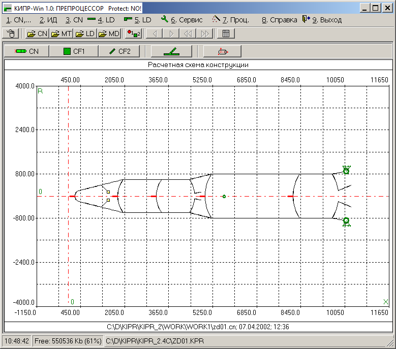
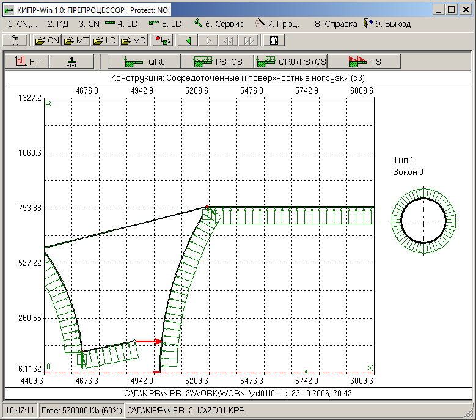
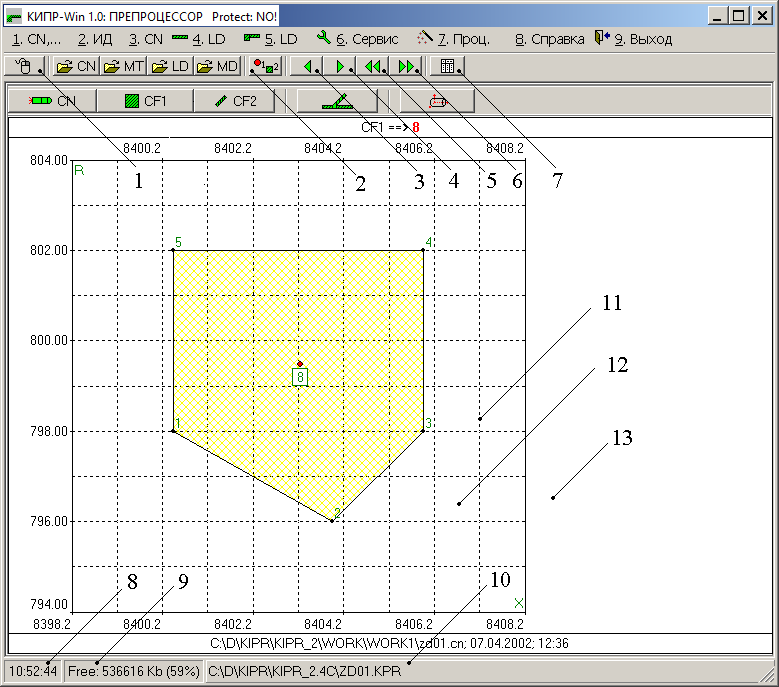
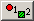
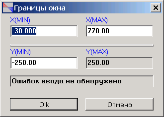
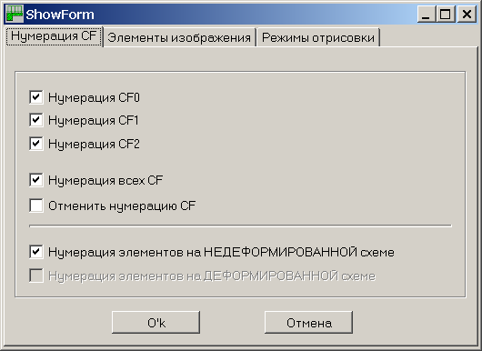
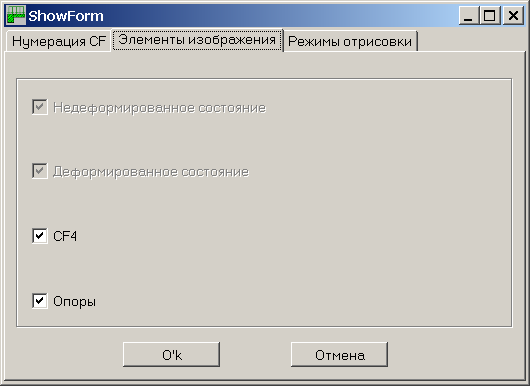
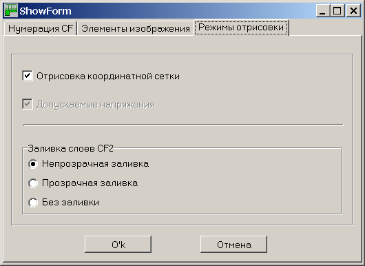
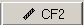
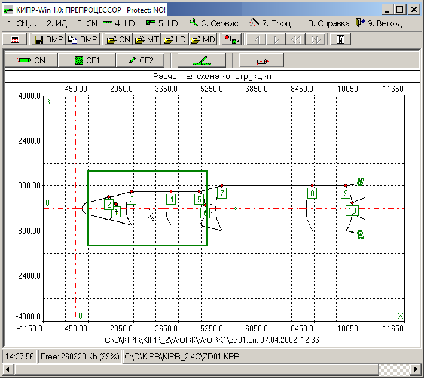

5.4.1.1. Функциональное назначение
5.4.1.2. Команды управления
ОТРИСОВЩИК обеспечивает визуализацию геометрической модели конструкции, модели внешних воздействий, а также результатов расчета конструкции.
ОТРИСОВЩИК включает в себя ДОКУМЕНТАТОР, предназначенный для выполнения следующих функций:
Области отрисовки и органы
управления
Управление изображением с помощью компьютерной
мыши
Управление изображением с помощью клавиатуры
Изменение размеров окна ОТРИСОВЩИКА
Области отрисовки
и органы управления
Примеры отрисовки конструкции и действующих на нее нагрузок показаны на рис. 1-3.

Рис. 1

Рис. 2

Рис. 3
Рассмотрим команды управления режимами работы ОТРИСОВЩИКА, одинаковые для всех подсистем (специфические команды ОТРИСОВЩИКА различных подсистем описаны там же, где описывается технология работы с этими подсистемами).
Основные органы управления и области вывода ОТРИСОВЩИКА показаны на рис. 3. Числами на этом рисунке обозначены:

- кнопка управления параметрами отрисовки;Прокомментируем некоторые из этих позиций.
Нажатие на кнопку (рис. 3, поз. 1) приводит к появлению всплывающего меню (рис. 4).
Рис. 4
Позиция 1 всплывающего меню (альтернатива – клавиша <Пробел>) предназначена для восстановления графического изображения (например, после его перемещения или масштабирования).
Позиция 2 всплывающего меню эквивалентна кнопке управления параметрами отрисовки (рис. 3, поз. 2). Функциональное назначение этой позиции меню описано ниже.
Позиция 3 всплывающего меню предназначена для вызова КАЛЬКУЛЯТОРА.
Позиция 4 всплывающего меню предназначена для вызова ДОКУМЕНТАТОРА. Выбор этой позиции приводит к появлению подменю ДОКУМЕНТАТОРА.
Позиция 1 подменю ДОКУМЕНТАТОРА предназначена для вывода информации по исходным данным и результатам расчета в табличном виде.
Позиция 2 подменю ДОКУМЕНТАТОРА предназначена для сохранения графического изображения в формате BMP в файле на диске.
Выбор позиции 3 этого подменю приводит к копированию текущего графического изображения (в формате BMP) в буфер обмена операционной системы. Это изображение можно вставить из буфера обмена в окно редактирования текстового редактора (например, редактора Microsoft Word). Это вполне допустимо, если не требуется дальнейшее редактирование рисунка без потери качества изображения. В противном случае рекомендуется следующая последовательность действий. Запустить какой-нибудь графический редактор (рекомендуется стандартный - Paint). Скопировать текущее графическое изображение в буфер обмена операционной системы. Вставить изображение из буфера обмена в окно рекдактрования графического редактора. Выделить средствами редактирования графического редактора изображения (например, при работе в в Paint нажать комбинацию клавиш <Ctrl+A>) и скопировать выделенное изображение в буфер обмена операционной системы. Переключившись в текстовый редактор (например, редактор Microsoft Word), вставить картинку из буфера обмена. Такие графические редакторы, как Paint, копируют изображение в буфер обмена сразу в нескольких форматах, в том числе и в формате, допускающем дальнейшее редактирования изображения без потери его качества.
Позиция 4 подменю ДОКУМЕНТАТОРА предназначена для вызова окна диалогового режима задания координат границ графического изображения (минимальных (MIN) и максимальных (MAX) значений координат изображения в горизонтальном (X) и вертикальном (Y) направлениях):

Выбор позиции 5 подменю ДОКУМЕНТАТОРА (рис. 4) приводит к выводу текущего графического изображения на принтер. При этом используются текущие настройки принтера (такие, как качество печати или ориентация выведенного на печать изображения). Эти настройки меняются с помощью стандартных средств операционной системы, имеющихся, в частности в так называемой панели управления.
Позиция 5 всплывающего меню предназначена для возврата в режим просмотра графического изображения.
Нажатие на кнопку управления параметрами отрисовки (поз. 2 на рис. 3) приводит к появлению Окна управления параметрами отрисовки (рис. 5-7):

Рис. 5

Рис. 6

Рис. 7
Установка или снятие флажков влияет на объем и характер выводимой в область управления отрисовкой (поз. 12 на рис. 3) информации. В зависимости от характера выводимой информации поля на этом органе управления могут быть как доступными (яркое изображение), так и недоступными (бледное изображение).
Кнопки и (поз. 3 и 4 на рис. 3) соответственно отличаются от кнопок и (поз. 5 и 6 на рис. 3) в следующем. Первые две кнопки предназначены для последовательного глобального просмотра всех изображений выбранной пользователем категории. При этом зачастую бывает полезным при последовательном просмотре некоторые из этих изображений опускать. Например, кнопка

(допустим, в ПРЕПРОЦЕССОРЕ системы) предназначена для визуализации исходной информации по CF2 (оболочкам). Для каждого такого расчетного фрагмента предусмотрен последовательный вывод следующих изображений: изображение расчетного фрагмента; изображение слоев этого расчетного фрагмента и изображений с информацией о материалах слоев этого изображения. Нажатие на кнопки и приведет к последовательному воспроизведению всех этих изображений. Нажатие на кнопки и будет приводит к выводу лишь титульных изображений (в данном случае – изображений расчетных фрагментов).Управление изображением с помощью
компьютерной мыши
Область управления отрисовкой (поз. 12 на рис. 3) предназначена для управления режимами визуализации с помощью компьютерной мыши.
Доступны следующие манипуляции:
1. Увеличение фрагмента изображения.
Последовательность действий:
2. Увеличение изображения
3. Уменьшение изображения
4. Смещение изображения вниз
5. Смещение изображения вверх
6. Смещение изображения влево
7. Смещение изображения вправо
8. Вызов всплывающего меню

Рис. 8
Рис. 9
Управление изображением с помощью
клавиатуры
Доступны следующие манипуляции (помимо описанных выше в подразделе “Области отрисовки и органы управления”):
1. Получение фрагмента изображения.
2. Увеличение изображения
3. Уменьшение изображения
4. Смещение изображения вниз
5. Смещение изображения вверх
6. Смещение изображения влево
7. Смещение изображения вправо
8. Восстановление первоначального изображения
Изменение размеров окна ОТРИСОВЩИКА
Изменение размеров окна ОТРИСОВЩИКА иногда полезно при подготовке графического материала для отчета. Это связано с различиями в разрешении мониторов.
Изменение размера окна выполняется с помощью общепринятого в операционных системах Windows приема: